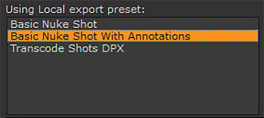

在
时间轴环境
,您可以选择创建一个剪辑实例的 Nuke Comp，以便能够在中打开它
您只能在帧服务器运行时从时间轴创建复合。您可以在界面右下角的状态栏中检查服务器的状态。
在创建 Nuke Comp 之前，您可以选择更改 出口 设置，并设置所需的 拍摄预设 在中设置 项目设置 对话框以获得所需的结果。
注意:
创建 Comp 目前只支持图像序列格式的渲染，如
。Dpx
和
。Exr
文件。呈现为容器格式，如
。Mov
,显示以下警告:
它不需要改变 出口 和 项目设置 。如果在创建 Nuke Comp 时不更改这些设置，将使用默认设置。
注意: 你可以使用 Nuke 工作室 的内部帧服务器，利用外部从机来更快地处理渲染。请参阅 在外部机器上使用帧服务器 欲了解更多信息。
如果不更改导出设置，则 使用本地导出预设设置 控件只使用的默认设置 带有注释的基本核弹射击 .
要更改此设置，请执行以下操作:
| 1。 | 选择 文件 > 出口. 或按 Ctrl + Shift + E . |
这将打开 出口 对话框。
| 2. | 在 使用本地导出预设: 部分中，您可以选择使用时要导出的快照预设类型。 创建 Comp . |

有关更多信息，请参见 导出对话框简介 .
| 3. | 选择所需的设置，然后关闭 出口 对话框。 |
如果你不改变 项目设置 ,该 拍摄预设 控件只使用的默认设置 带有注释的基本核弹射击 .
要更改 拍摄预设 在中设置 项目设置 对话框中，执行以下操作:
| 1。 | 选择 项目 > 编辑设置 . |
| 2. | 打开 出口/往返 点击它的部分。 |
| 3. | 使用 拍摄预设 下拉菜单选择所需的设置。 |
注意: 您可以使用自定义快照预设，但它们必须包含 Nuke 项目文件 和 核写入节点 内容预设对选择有效。请参阅 使用本地和项目预设 , Nuke 项目文件设置 ,和 核写入节点设置 欲了解更多信息。
| 4. | 选择所需设置后，关闭 项目设置 对话框。 |
要创建剪辑实例的 Nuke Comp，请执行以下操作:
| 1。 | 右键单击要用于创建 Nuke Comp 的剪辑实例。 |
| 2. | 选择 影响 > 创建 Comp . |
如果尚未在中设置项目根文件夹 项目设置 对话框, Nuke 工作室 要求您设置项目根文件夹。
| 3. | 单击 选择 ,选择到所需位置，然后单击 好 . |
现在创建了一个 Nuke Comp，并将其直接放置在下一个可用轨道上的原始剪辑实例上方。

Nuke Comp 以浅红色显示，表示 Nuke Comp 尚未渲染。您可以选择通过右击并选择来渲染它 渲染 Comp ,或通过选择 渲染 > 渲染选定的 Comp 容器 .
注意: 你可以通过选择来渲染所有的 Nuke 组件 渲染 > 渲染所有 Comp 容器 .
| 4. | 打开核弹组件 合成环境 在同一个会话中，双击 Nuke Comp。你也可以打开核弹的比较中, 合成环境 在同一会话中，右键单击时间线上方的 Nuke Comp，或在项目 bin 中选择 打开 > 节点图 . |
要在新的 NukeX 会话中打开 Nuke Comp，您可以持有 Ctrl / Cmd 双击 Nuke Comp，或者你可以右击 Nuke Comp 并选择 打开 > 新 Nuke 会议 .
如果尚未在中设置项目根文件夹 项目设置 对话框, Nuke 工作室 询问您是否要保存和设置项目根文件夹。
现在，您可以使用中提供的任何工具编辑脚本并添加 VFX
|
Comp 的颜色 |
意义 |
|
|
浅红色 |
这意味着 comp 尚未呈现。
|
|
|
暗红色 (带 关闭 ) |
|
这意味着 comp 处于脱机状态。 |
|
浅绿色 (带进度条) |
|
这意味着 comp 正在渲染。 |
|
深绿色 |
|
这意味着 comp 已经渲染。 |
通过执行以下操作，您可以在单个轨道或跨多个轨道的多个剪辑实例中创建 Nuke Comps:
| 1。 | 通过使用在时间轴上选择多个剪辑实例 转变 + 单击以选择相邻剪辑实例和/或的行 Ctrl / Cmd + 单击选择多个不相邻的剪辑实例。这些可以跨越多个轨道。 |
| 2. | 在选定的剪辑实例之一上单击鼠标右键，然后选择 影响 > 创建 Comp . |
这将打开一个 创建 Comp 对话框。
| 3. | 的 创建 Comp 对话框显示所有选定的剪辑，并允许您从列表中选择一个主剪辑，只需单击它。 |
主剪辑突出显示为黄色。
| 4. | 要为所有剪辑实例创建一个 Nuke Comp，请选择 在所有镜头中添加单个 comp 单选按钮。或者，如果你想为每个选定的剪辑实例创建一个 Nuke Comp，请选择 为每个镜头添加一个单独的 comp 单选按钮。 |
当您在单个轨道上的多个剪辑实例上创建 Nuke Comp 时，节点树会自动连接，并按相反的时间顺序显示，如下所示。
当您在不同轨道的多个剪辑实例上创建 Nuke Comp 时，来自同一轨道的节点树被连接, 但是不同轨道上的节点树默认情况下没有连接 (见下文)。您可以选择使用 “创建 Comp 特殊设置” 将它们连接起来。请参阅 创建 Comp Special 欲了解更多信息。

您也可以选择使用创建一个 Nuke Comp 创建 Comp Special 。当您使用 创建 Comp Special 选项，包含导出选项的对话框将自动打开，允许您为选定的 Nuke Comp 设置导出设置。
要使用 创建 Comp Special 选项:
| 1. | Right-click on the clip instance that you want use to create a Nuke Comp. |
| 2. | 选择 影响 > 创建 Comp Special . |
这将打开一个 创建 Comp 包含可用导出设置的对话框。

您可以使用此对话框设置导出位置、设置版本号、定义要导出的轨迹、按标记筛选以及定义范围。请参阅 导出对话框简介 欲了解更多信息。
| 3. | 在中选择核弹脚本 路径 对话框的一部分，然后转到 内容 部分。 |
将显示许多其他控件。你可以使用这些来指定你的 Nuke Comp 包括什么以及它是如何创建的。您可以选择 连接轨道 复选框以连接节点图中的所有节点树 (跨不同轨迹)。请参阅 导出对话框简介 有关这些选项的更多信息。
| 4. | 指定所需设置后，单击 创建 Comp . |
出现一个对话框，说明您已经更改了导出模板。您可以通过选择来选择保留更改 是 或单击 没有 放弃更改。
Nuke Comp 以浅红色显示，表示 Nuke Comp 尚未渲染。
| 5. | 双击核弹的比较来打开它 合成环境 . |
现在，您可以使用中的任何工具集添加 VFX
合成环境
.
您可以通过选择要禁用的 Nuke Comp 并按下来禁用和重新启用时间线上的 Nuke Comp D .
当您对所做的更改感到满意时，您可以通过选择保存新版本的脚本 文件 > 保存新的 Comp 版本 (或按 Alt 转变 S )。
保存新版本的 Comp 后，您可以更新您创建的原始 Nuke Comp。要升级 Nuke Comp，请执行以下操作:
| 1。 | 在时间轴上，右击原始的 Nuke Comp。 |
| 2. | 选择 版本 > 版本向上 . |
Nuke Comp 版本升级。根据你的 偏好 > 性能 > 线程/进程 > 渲染 > 背景渲染 设置，comp 可能需要手动渲染。
|
|